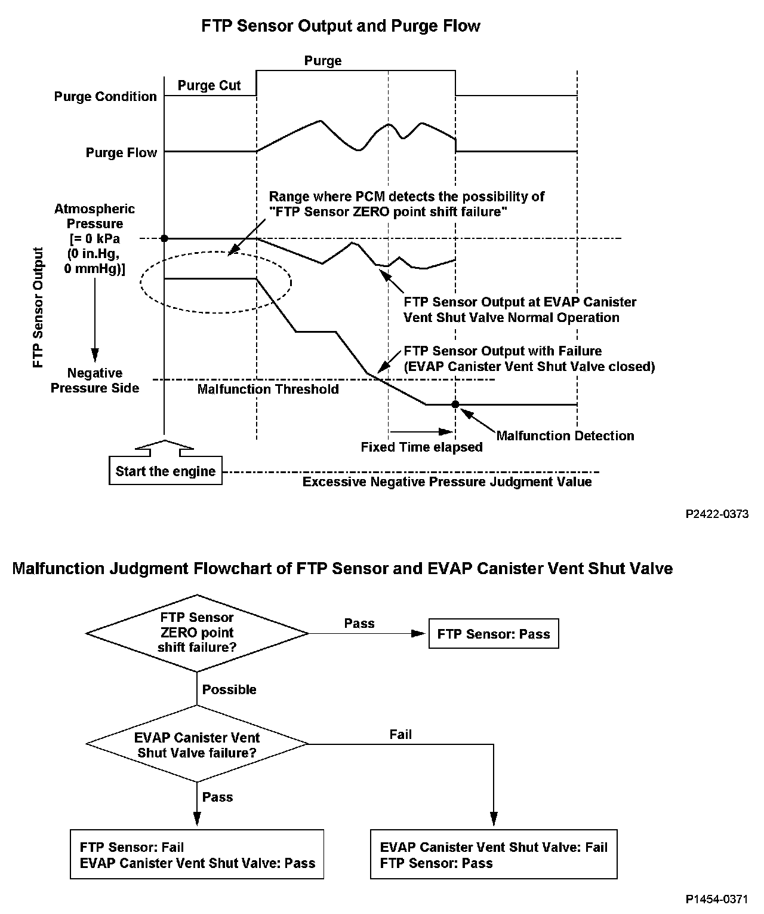
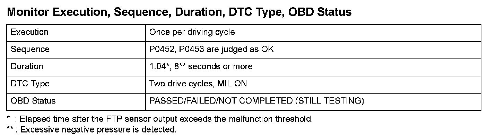
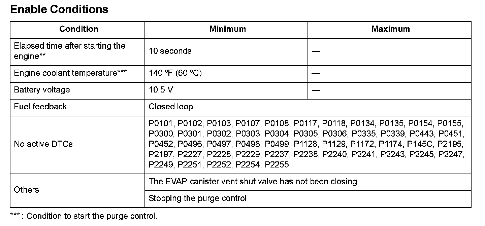

Advanced Diagnostics
DTC P2422: Evaporative Emission (EVAP) Canister Vent Shut Valve Close Malfunction
General Description
The fuel tank pressure (FTP) sensor output indicates about atmospheric pressure 0 kPa (0 in.Hg, 0 mmHg) before purge starts since the evaporative emission (EVAP) canister vent shut valve is normally open (open to the atmosphere). The sensor indicates a negative pressure value (vacuum) during purging.
When the FTP sensor indicates vacuum after starting the engine, there is the possibility of an FTP sensor zero point shift failure or an EVAP canister vent shut valve stuck closed failure. So the powertrain control module (PCM) monitors the FTP sensor output after purge starts. The PCM detects a malfunction of the EVAP canister vent shut valve if the output indicates excessive vacuum.
However, if the fuel tank internal pressure is below the specified value (excessive vacuum is detected) when starting the engine, the malfunction detection should be done as follows because it is difficult to distinguish the FTP sensor range problem (P1454) from the EVAP canister vent shut valve stuck closed (P2422).
1. If neither Temporary DTC (P1454 nor P2422) is stored, both DTCs are stored.
2. If both Temporary DTCs (P1454 and P2422) are stored and excessive vacuum is detected, both DTCs are stored.
3. If either Temporary DTC (P1454 or P2422) is stored and excessive vacuum is detected, the PCM stores the DTC of the Temporary DTC that was stored.

Monitor Execution, Sequence, Duration, DTC Type, OBD Status

Enable Conditions
Malfunction Threshold
The output from the fuel tank pressure sensor is-4 kPa (-1.0 in.Hg, -25 mmHg)*, -2 kPa (-0.4 in.Hg, -10 mmHg)** or less for at least 1.04*, 8** seconds.
* : Elapsed time after the FTP sensor output exceeds the malfunction threshold.
**: Excessive negative pressure is detected.
Confirmation Procedure with the HDS
Do the EVAP CVS ON in the INSPECTION MENU with the HDS.
Driving Pattern
Start the engine. Hold the engine speed at 3,000 rpm without load (in Park or neutral) until the radiator fan comes on, then let it idle.
Diagnosis Details
Conditions for illuminating the MIL
When a malfunction is detected during the first drive cycle, a Temporary DTC is stored in the PCM memory. If the malfunction recurs during the next (second) drive cycle, the MIL comes on and the DTC and the freeze frame data are stored.
Conditions for clearing the MIL
The MIL will be cleared if the malfunction does not recur during three consecutive trips in which the diagnostic runs.
The MIL, the DTC, the Temporary DTC, and the freeze frame data can be cleared by using the scan tool Clear command or by disconnecting the battery.